Highlighted rows need a screenshot. Compare each answer and text with the PDF.
| Q1 p.1 Ans: 3 General Intelligence and Reasoning |
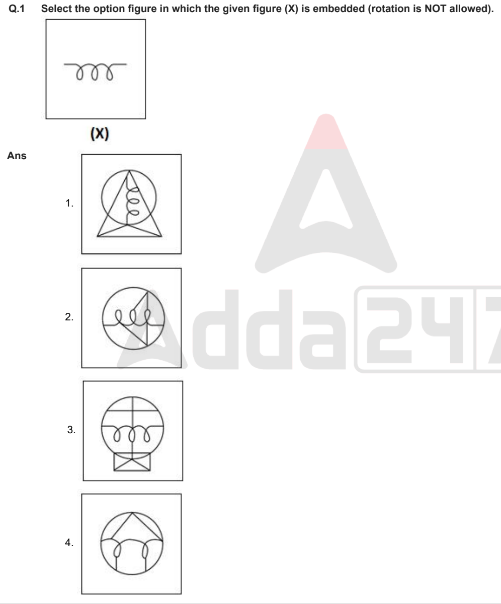 | Select the option figure in which the given figure (X) is embedded (rotation is NOT allowed). 1) 2) 3) 4) |
| Q2 p.2 Ans: 1 General Intelligence and Reasoning | Four letter-clusters have been given, out of which three are alike in some manner and one is different. Select the letter-
cluster that is different.
Note: The odd one out is not based on the number of consonants/vowels or their position in the letter cluster. 1) BEHI 2) TWYZ 3) PSUV 4) FIKL | |
| Q3 p.2 Ans: 4 General Intelligence and Reasoning | In a certain code language, ‘SILK’ is written as ‘TIML’ and ‘INSECT’ is written as ‘IOTEDU’. How will ‘CHANGE’ be written in
that language? 1) DOIHAE 2) DEIOHA 3) DEIHAO 4) DIAOHE | |
| Q4 p.2 Ans: 4 General Intelligence and Reasoning | Select the set in which the numbers are related in the same way as are the numbers of the following sets.
(NOTE: Operations should be performed on the whole numbers, without breaking down the numbers into its constituent
digits. E.g. 13 – Operations on 13 such as adding /deleting /multiplying etc. to 13 can be performed. Breaking down 13 into 1
and 3 and then performing mathematical operations on 1 and 3 is not allowed.)
(19, 456, 6)
(16, 320, 5) 1) (18, 378, 7) 2) (14, 210, 5) 3) (21, 504, 8) 4) (18, 648, 9) | |
| Q5 p.2 Ans: 4 General Intelligence and Reasoning | The position of how many letters will remain unchanged if each of the letter in the word ‘JANITOR’ is arranged in English
alphabetical order? 1) Three 2) Two 3) One 4) Zero | |
| Q6 p.3 Ans: 4 General Intelligence and Reasoning |
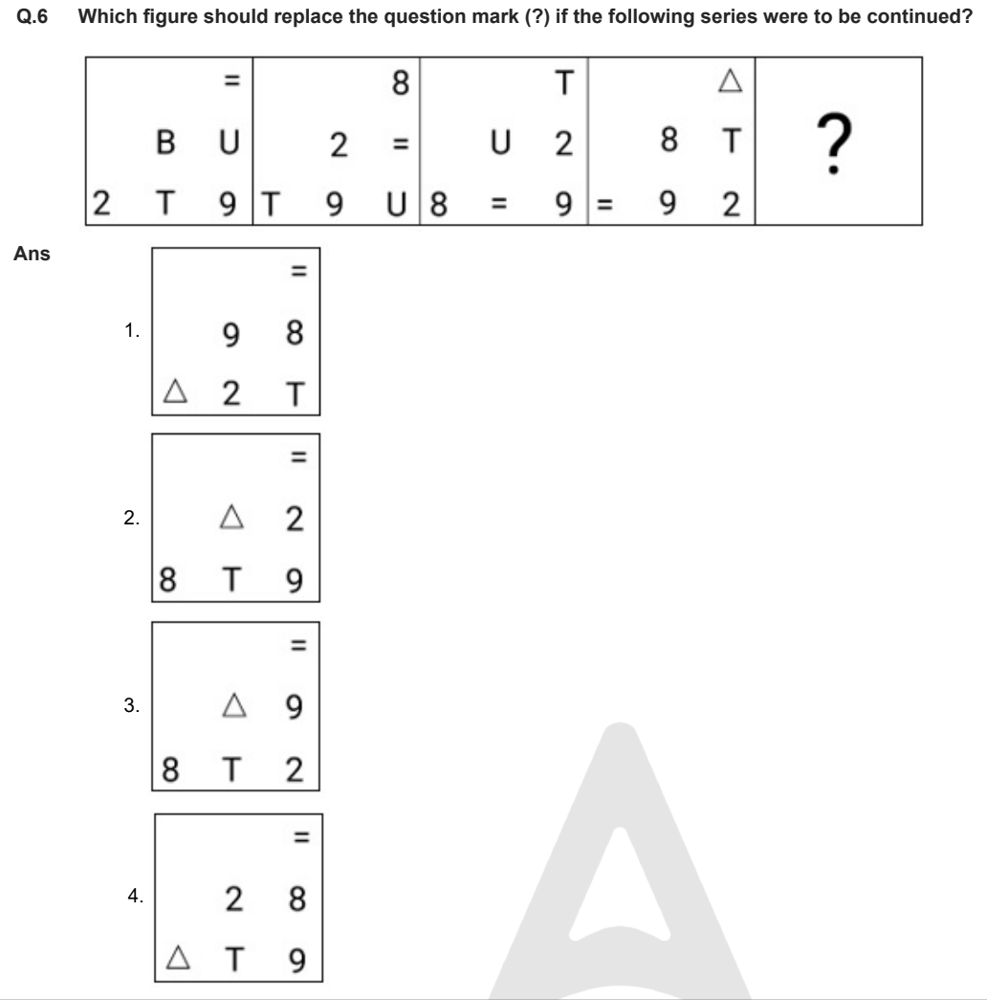 | Which figure should replace the question mark (?) if the following series were to be continued? 1) 2) 3) 4) |
| Q7 p.3 Ans: 2 General Intelligence and Reasoning | In the following number-pairs, the second number is obtained by applying certain mathematical operations to the first
number. Select the set in which the numbers are related in the same way as are the numbers of the following sets.
(NOTE : Operations should be performed on the whole numbers, without breaking down the numbers into its constituent
digits. E.g. 13 – Operations on 13 such as adding /deleting /multiplying etc., to 13 can be performed. Breaking down 13 into 1
and 3 and then performing mathematical operations on 1 and 3 is not allowed.)
(12, 145)
(9, 82) 1) (16, 256) 2) (14, 197) 3) (22, 483) 4) (8, 69) | |
| Q8 p.3 Ans: 4 General Intelligence and Reasoning | Which of the four options will replace the question mark (?) in the following series?
XF 11 , YI 15, ZL 19 , AO 23, ? 1) CQ 25 2) BP 26 3) CR 25 4) BR 27 | |
| Q9 p.3 Ans: 3 General Intelligence and Reasoning | Select the combination of letters that when sequentially placed in the blanks of the given series will complete the series.
P _ A A _ _ Z A _V _ _ A _ _ 1) VPZZPVAP 2) ZPVVAPVZ 3) ZVPAPZAV 4) VZAAPVPZ | |
| Q10 p.4 Ans: 2 General Intelligence and Reasoning |
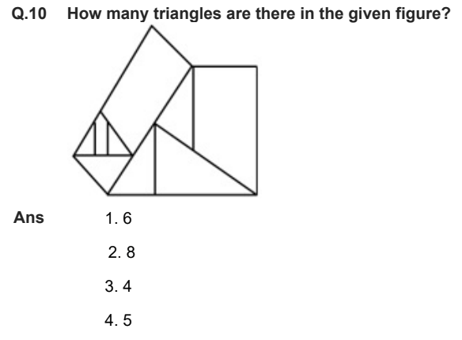 | How many triangles are there in the given figure? 1) 6 2) 8 3) 4 4) 5 |
| Q11 p.4 Ans: 1 General Intelligence and Reasoning |
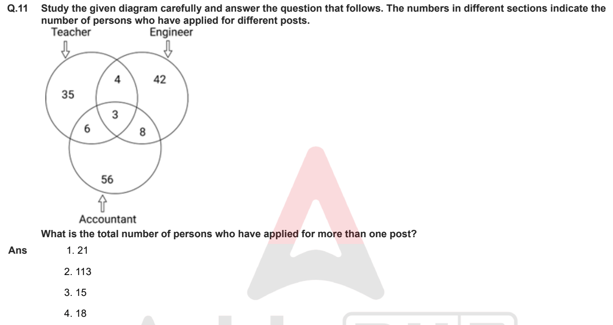 | Study the given diagram carefully and answer the question that follows. The numbers in different sections indicate the
number of persons who have applied for different posts.
What is the total number of persons who have applied for more than one post? 1) 21 2) 113 3) 15 4) 18 |
| Q12 p.4 Ans: 4 General Intelligence and Reasoning | Three of the following numbers are alike in a certain way and one is different. Pick the odd one out.
(NOTE : Operations should be performed on the whole numbers, without breaking down the numbers into its constituent
digits. E.g. 13 – Operations on 13 such as adding /deleting /multiplying etc., to 13 can be performed. Breaking down 13 into 1
and 3 and then performing mathematical operations on 1 and 3 is not allowed.) 1) 36 – 84 2) 72 – 168 3) 66 – 154 4) 33 – 72 | |
| Q13 p.4 Ans: 2 General Intelligence and Reasoning | Select the option that is related to the fifth letter-cluster in the same way as the second letter-cluster is related to the first
letter-cluster and the fourth letter-cluster is related to the third letter-cluster.
CWE:ZFX ::PYT:MDI :: KIL:? 1) PRO 2) RTQ 3) STQ 4) PQO | |
| Q14 p.5 Ans: 1 General Intelligence and Reasoning |
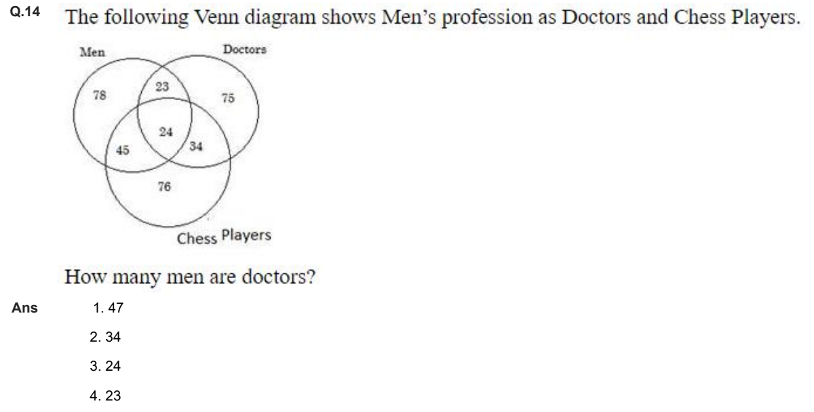 | 1) 47 2) 34 3) 24 4) 23 |
| Q15 p.5 Ans: 2 General Intelligence and Reasoning | Which of the following terms will replace the question mark (?) in the given series?
MFT, NIS, PLQ, SON, WRJ, ? 1) RUE 2) BUE 3) BVD 4) BUP | |
| Q16 p.6 Ans: 3 General Intelligence and Reasoning |
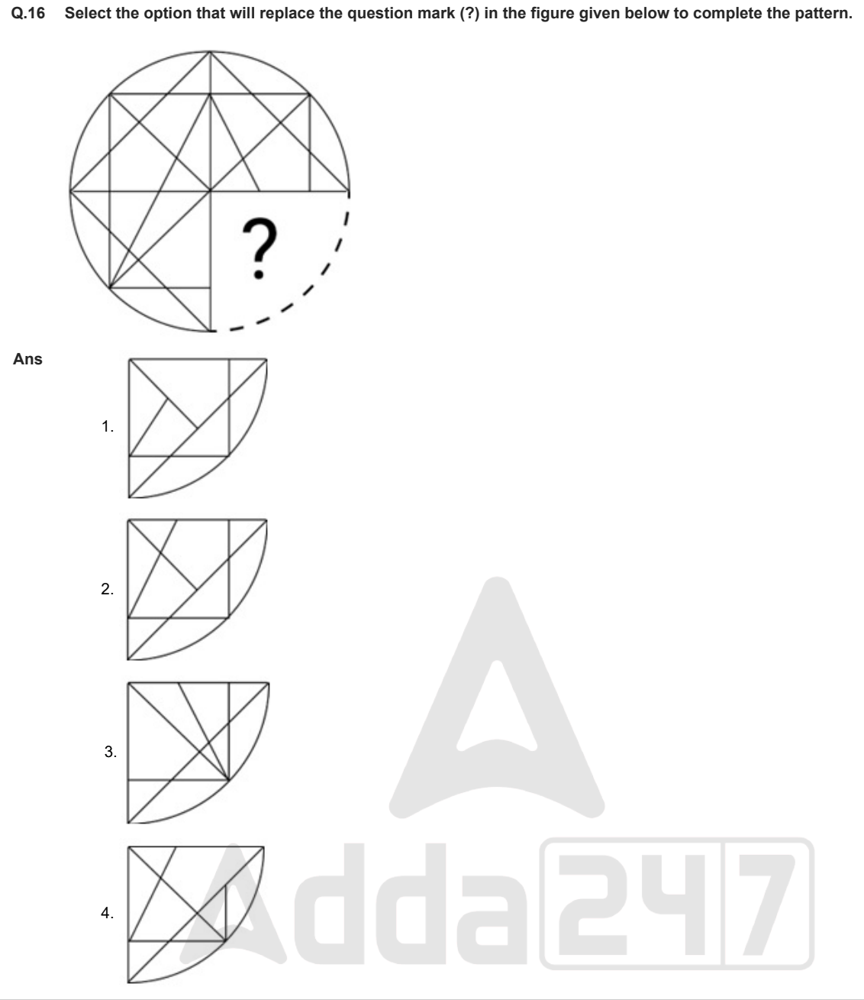 | Select the option that will replace the question mark (?) in the figure given below to complete the pattern. 1) 2) 3) 4) |
| Q17 p.6 Ans: 4 General Intelligence and Reasoning | Select the number from the given options to complete the series.
35, 38, 43, 50, 59, ___ 1) 62 2) 68 3) 78 4) 70 | |
| Q18 p.6 Ans: 4 General Intelligence and Reasoning | Select the set in which the numbers are related in the same way as are the numbers of the following sets.
(34, 47, 62)
(119, 142, 167)
(NOTE: Operations should be performed on the whole numbers, without breaking down the numbers into its constituent
digits. E.g. 13 – Operations on 13 such as adding /deleting /multiplying etc. to 13 can be performed. Breaking down 13 into 1
and 3 and then performing mathematical operations on 1 and 3 is not allowed) 1) (27, 38, 51) 2) (48, 65, 82) 3) (64, 78, 99) 4) (79, 98, 119) | |
| Q19 p.7 Ans: 4 General Intelligence and Reasoning |
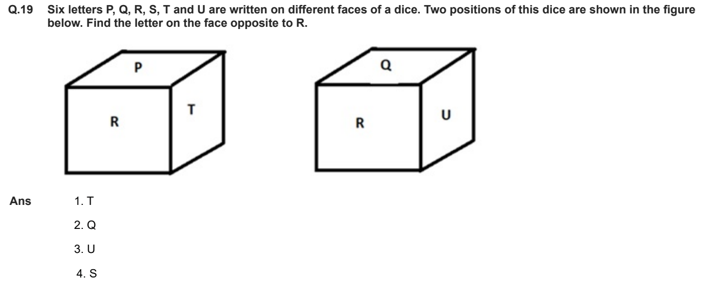 | Six letters P, Q, R, S, T and U are written on different faces of a dice. Two positions of this dice are shown in the figure
below. Find the letter on the face opposite to R. 1) T 2) Q 3) U 4) S |
| Q20 p.7 Ans: 3 General Intelligence and Reasoning | Which two numbers (not digits) should be interchanged to make the given equation correct?
24 ÷ 3 – 4 × 2 + 6 × 5 +12 = 50 1) 5 and 4 2) 4 and 3 3) 24 and 12 4) 3 and 2 | |
| Q21 p.7 Ans: 4 General Intelligence and Reasoning | What will come in place of the question mark (?) in the following equation, if ‘+’ and ‘–’ are interchanged and ‘×’ and ‘÷’ are
interchanged?
321 – 371 ÷ 22 + 216 × 6 = ? 1) 7848 2) 7884 3) 8747 4) 8447 | |
| Q22 p.7 Ans: 4 General Intelligence and Reasoning | In a certain code language,
A + B means ‘A is the son of B’,
A − B means ‘A is the sister of B’,
A × B means ‘A is the brother of B’ and
A ÷ B means ‘A is the mother of B’.
Based on the above, how is T related to P if ‘P ÷ Q × R − M + T’? 1) Son 2) Brother 3) Father 4) Husband | |
| Q23 p.7 Ans: 4 General Intelligence and Reasoning |
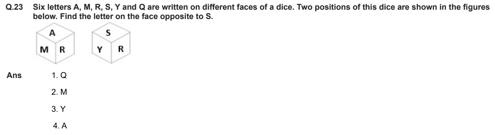 | Six letters A, M, R, S, Y and Q are written on different faces of a dice. Two positions of this dice are shown in the figures
below. Find the letter on the face opposite to S. 1) Q 2) M 3) Y 4) A |
| Q24 p.8 Ans: 1 General Intelligence and Reasoning | In a certain code language, ‘SET’ is coded as ‘37’ and ‘MIX’ is coded as ‘35’. How will ‘WAR’ be coded in that language? 1) 39 2) 21 3) 32 4) 29 | |
| Q25 p.8 Ans: 1 General Intelligence and Reasoning |
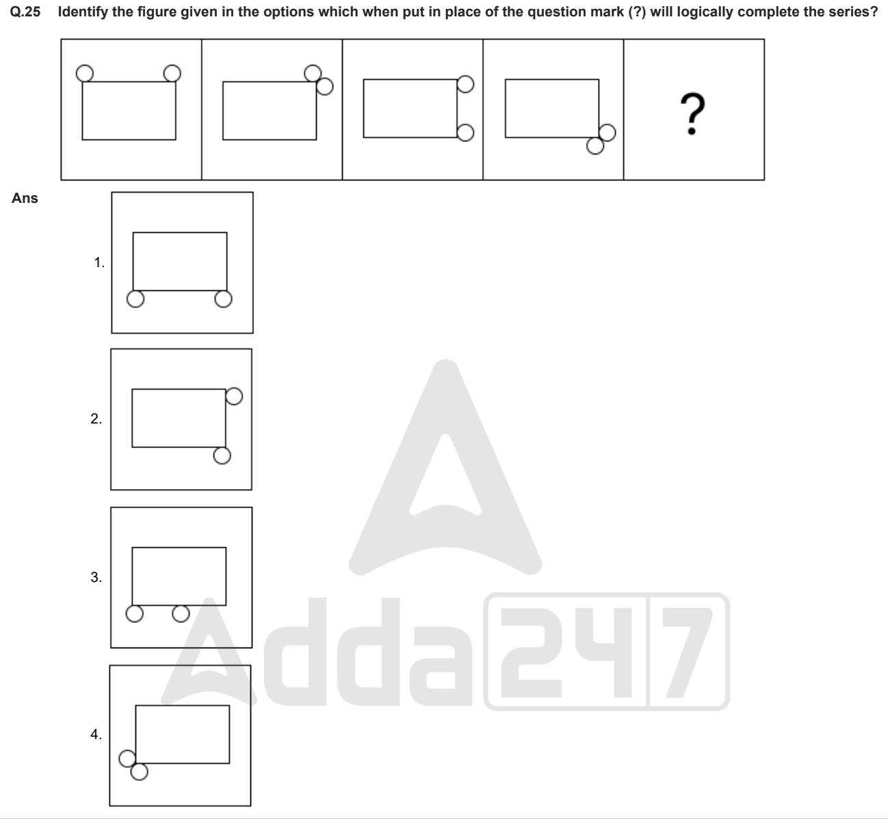 | Identify the figure given in the options which when put in place of the question mark (?) will logically complete the series? 1) 2) 3) 4) |
| Q26 p.8 Ans: 1 General Awareness | Who among the following devised the system of ‘Subsidiary Alliance’? 1) Lord Wellesley 2) Lord Canning 3) Lord William Bentinck 4) Lord Dalhousie | |
| Q27 p.8 Ans: 1 General Awareness | At which Olympics was Kho-Kho featured in an exhibition in the main stadium? 1) 1936 2) 1932 3) 2008 4) 2016 | |
| Q28 p.9 Ans: 1 General Awareness | Which of the following statements is INCORRECT? 1) Fats and oils get reduced over time and smell bad. 2) Fats and oils are oxidised, they become rancid. 3) Antioxidants are added to foods containing fats and oil to prevent oxidation. 4) Chips manufacturers usually flush bags of chips with Nitrogen to prevent the chips from getting ranicid. | |
| Q29 p.9 Ans: 1 General Awareness | Hot local wind that flows over north India in summer is known as: 1) Loo 2) Chinook 3) Mango showers 4) Purga | |
| Q30 p.9 Ans: 2 General Awareness | ‘Nuakhai’ is the state festival of: 1) Meghalaya 2) Odisha 3) Tamil Nadu 4) Bihar | |
| Q31 p.9 Ans: 2 General Awareness | Which Article of the Indian Constitution prohibits providing of any religious instruction in the educational institutions
maintained by the State? 1) Article 29 2) Article 28 3) Article 30 4) Article 31 | |
| Q32 p.9 Ans: 1 General Awareness | As per the definition of Census of India, a ‘marginal worker’ is a person who works for: 1) less than 183 days (or six months) in a year 2) more than 183 days (or six months) in a year 3) eight months in a year 4) 83 days in a year | |
| Q33 p.9 Ans: 2 General Awareness | In which year was the 'Naye Bharat Ke Sapne' campaign launched by Meta and the Ministry of Women? 1) 2022 2) 2023 3) 2020 4) 2021 | |
| Q34 p.9 Ans: 4 General Awareness | Under which of the following Acts was the power to rule India, transferred from the English East India Company to the
British Crown? 1) Charter Act of 1833 2) Regulating Act 1773 3) Pitt's India Act 1784 4) Government of India Act 1858 | |
| Q35 p.9 Ans: 1 General Awareness | Which of the following is an inactivated (killed) polio vaccine developed in 1952? 1) Salk vaccine 2) Imvanex vaccine 3) HDCV vaccine 4) TAB vaccine | |
| Q36 p.10 Ans: 3 General Awareness | Which of the following statements is correct?. 1) The five-year plan focuses mostly on private intervention in the economy. 2) The five-year plan always focused on the growth of the tertiary sector. 3) The five-year plan permits long-term intervention by the government in the economy. 4) A five-year plan always stresses market-oriented activities. | |
| Q37 p.10 Ans: 1 General Awareness | What is the length of Indian Railways network, according to Railway Yearbook 2019-20? 1) 67,956 km 2) 1,604 km 3) 63,950 km 4) 2,402 km | |
| Q38 p.10 Ans: 1 General Awareness | In Pradhan Mantri Gramin Awaas yojana, the cost of unit assistance is shared between Central and State Governments in
the ratio ___________ in plain areas. 1) 60 : 40 2) 40 : 60 3) 90 : 10 4) 30 : 70 | |
| Q39 p.10 Ans: 2 General Awareness |
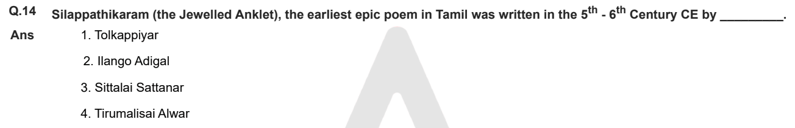 | Silappathikaram (the Jewelled Anklet), the earliest epic poem in Tamil was written in the 5th - 6th Century CE by _________. 1) Tolkappiyar 2) Ilango Adigal 3) Sittalai Sattanar 4) Tirumalisai Alwar |
| Q40 p.10 Ans: 4 General Awareness |
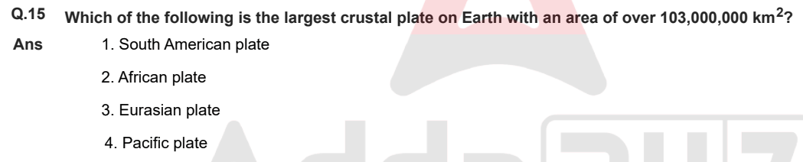 | Which of the following is the largest crustal plate on Earth with an area of over 103,000,000 km2? 1) South American plate 2) African plate 3) Eurasian plate 4) Pacific plate |
| Q41 p.10 Ans: 2 General Awareness | Which of the following personalities is a Padma Shri awardee folk singer from the state of Uttar Pradesh? 1) Ila Arun 2) Ajita Srivastava 3) Gurmeet Bawa 4) Teejan Bai | |
| Q42 p.10 Ans: 3 General Awareness | Which of the following countries won the first men’s Asian Hockey Championship trophy? 1) Japan 2) China 3) India 4) Pakistan | |
| Q43 p.10 Ans: 3 General Awareness | Which of the following goods needs further transformation in the economic process? 1) Consumer durable goods 2) Finished goods 3) Intermediate goods 4) Capital goods | |
| Q44 p.11 Ans: 2 General Awareness | In which of the following states is the Nrityagram, an Odissi dance institution, located? 1) Kerala 2) Karnataka 3) Tamil Nadu 4) Maharashtra | |
| Q45 p.11 Ans: 2 General Awareness | Who among the following was the youngest instrumentalist to be awarded the Padma Bhushan, the third highest civilian
award of India in 2002? 1) Pandit Ravi Shankar 2) Ustad Zakir Hussain 3) Pandit Bhimsen Joshi 4) Ustad Bismillah Khan | |
| Q46 p.11 Ans: 1 General Awareness | Who was the revenue minister during the reign of Akbar? 1) Todar Mal 2) Abdul Rahim 3) Mulla Do-Piyaza 4) Tansen | |
| Q47 p.11 Ans: 2 General Awareness |
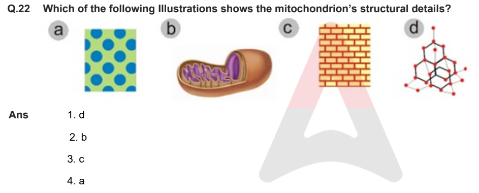 | Which of the following Illustrations shows the mitochondrion’s structural details? 1) d 2) b 3) c 4) a |
| Q48 p.11 Ans: 4 General Awareness |
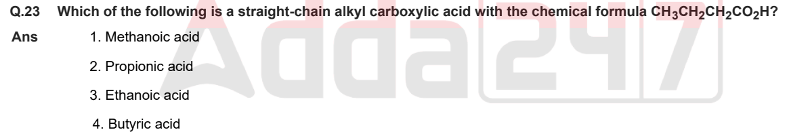 | Which of the following is a straight-chain alkyl carboxylic acid with the chemical formula CH CH CH CO H?
3 2 2 2 1) Methanoic acid 2) Propionic acid 3) Ethanoic acid 4) Butyric acid |
| Q49 p.11 Ans: 4 General Awareness | Article 77 of the Indian Constitution deals with the __________. 1) term of office of the Vice-President 2) Vice-President of India 3) oath of office by the Vice-President 4) conduct of business of the Government of India | |
| Q50 p.11 Ans: 1 General Awareness | The Muslim Women (Protection of Rights on Marriage) Act, 2019 deals with subsistence allowance in which of the following
Sections? 1) Section 5 2) Section 6 3) Section 7 4) Section 4 | |
| Q51 p.12 Ans: 1 Quantitative Aptitude | A stock portfolio consists of four stocks. Stock A represents 20% of the portfolio and has a return of 6%. Stock B represents
30% of the portfolio and has a return of 8%. Stock C represents 20% of the portfolio and has a return of 4%. Stock D
represents the remaining 30% of the portfolio and has a negative-return of 5%. What is the average return of the portfolio? 1) 2.9% 2) 2.6% 3) 3.2% 4) 3.4% | |
| Q52 p.12 Ans: 3 Quantitative Aptitude |
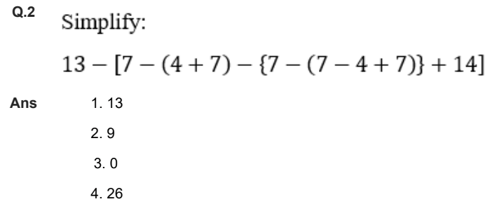 | 1) 13 2) 9 3) 0 4) 26 |
| Q53 p.12 Ans: 4 Quantitative Aptitude |
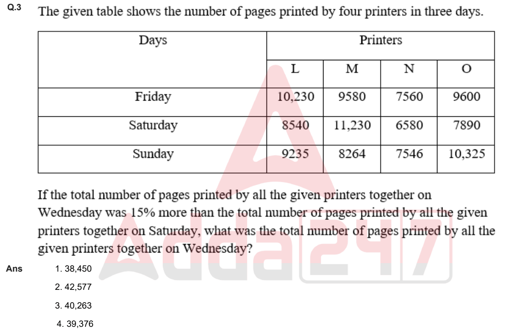 | 1) 38,450 2) 42,577 3) 40,263 4) 39,376 |
| Q54 p.12 Ans: 1 Quantitative Aptitude | In a clearance sale, a sari whose marked price was ₹10,490 is now sold for ₹9,441. What is the discount percentage on the
sari? 1) 10% 2) 15% 3) 18% 4) 12% | |
| Q55 p.12 Ans: 4 Quantitative Aptitude | A pipe can fill an overhead tank in 12 hours. But due to a leak at the bottom, it is filled in 18 hours. If the tank is full, how
much time will the leak take to empty it? 1) 3.6 hours 2) 63 hours 3) 7.2 hours 4) 36 hours | |
| Q56 p.13 Ans: 1 Quantitative Aptitude |
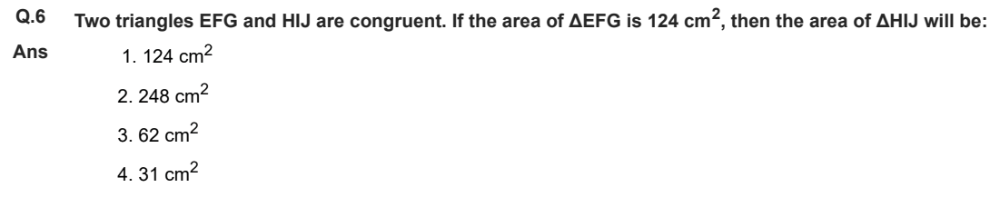 | Two triangles EFG and HIJ are congruent. If the area of ΔEFG is 124 cm2, then the area of ΔHIJ will be: 1) 124 cm2 2) 248 cm2 3) 62 cm2 4) 31 cm2 |
| Q57 p.13 Ans: 3 Quantitative Aptitude |
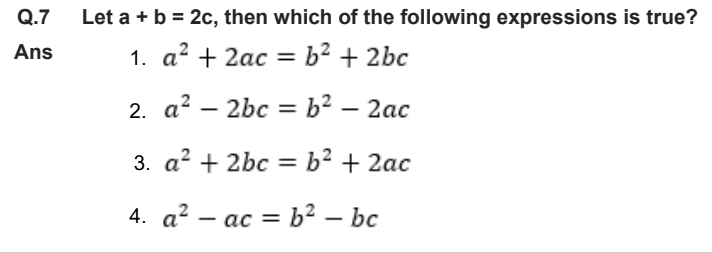 | Let a + b = 2c, then which of the following expressions is true? 1) 2) 3) 4) |
| Q58 p.13 Ans: 2 Quantitative Aptitude |
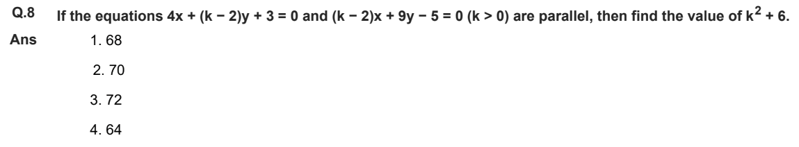 | If the equations 4x + (k − 2)y + 3 = 0 and (k − 2)x + 9y − 5 = 0 (k > 0) are parallel, then find the value of k2 + 6. 1) 68 2) 70 3) 72 4) 64 |
| Q59 p.13 Ans: 3 Quantitative Aptitude |
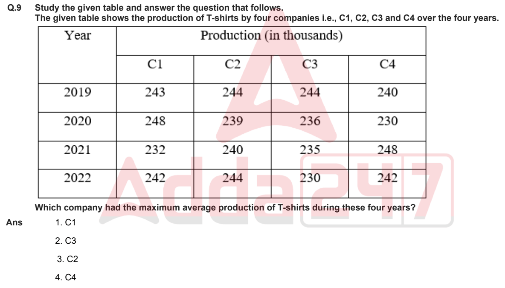 | Study the given table and answer the question that follows.
The given table shows the production of T-shirts by four companies i.e., C1, C2, C3 and C4 over the four years.
Which company had the maximum average production of T-shirts during these four years? 1) C1 2) C3 3) C2 4) C4 |
| Q60 p.13 Ans: 3 Quantitative Aptitude |
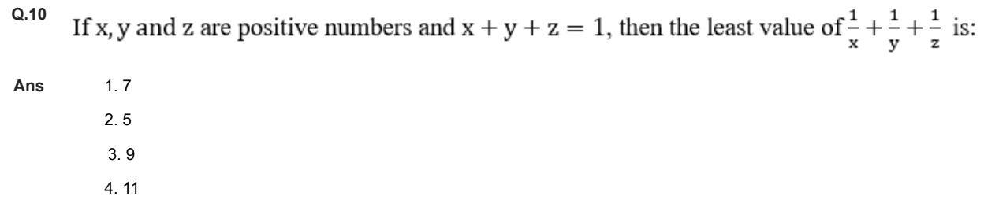 | 1) 7 2) 5 3) 9 4) 11 |
| Q61 p.14 Ans: 4 Quantitative Aptitude |
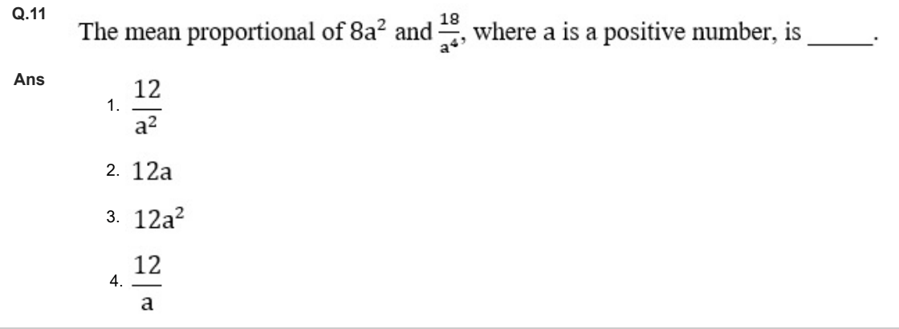 | 1) 2) 3) 4) |
| Q62 p.14 Ans: 3 Quantitative Aptitude |
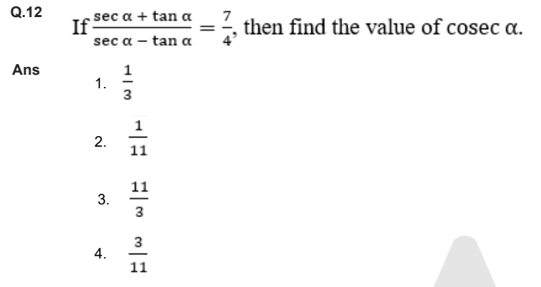 | 1) 2) 3) 4) |
| Q63 p.14 Ans: 3 Quantitative Aptitude | Ramesh has ₹18,000. He deposited ₹7,000 in a bank at the rate of 5% per annum and ₹6,000 in other bank at the rate of 6%
per annum simple interest. If he received ₹1,160 as simple interest at the end of one year, then the rate of interest per annum
on rest of the capital is equal to: 1) 10% 2) 11% 3) 9% 4) 8% | |
| Q64 p.14 Ans: 2 Quantitative Aptitude |
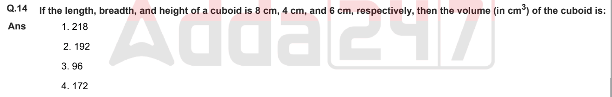 | If the length, breadth, and height of a cuboid is 8 cm, 4 cm, and 6 cm, respectively, then the volume (in cm3) of the cuboid is: 1) 218 2) 192 3) 96 4) 172 |
| Q65 p.14 Ans: 1 Quantitative Aptitude |
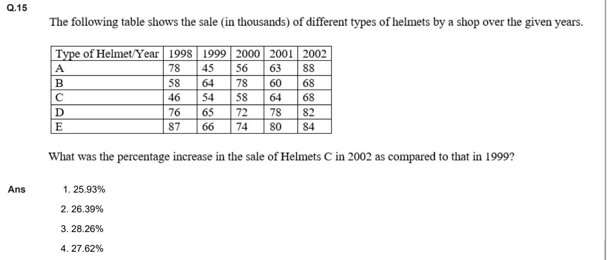 | 1) 25.93% 2) 26.39% 3) 28.26% 4) 27.62% |
| Q66 p.15 Ans: 4 Quantitative Aptitude |
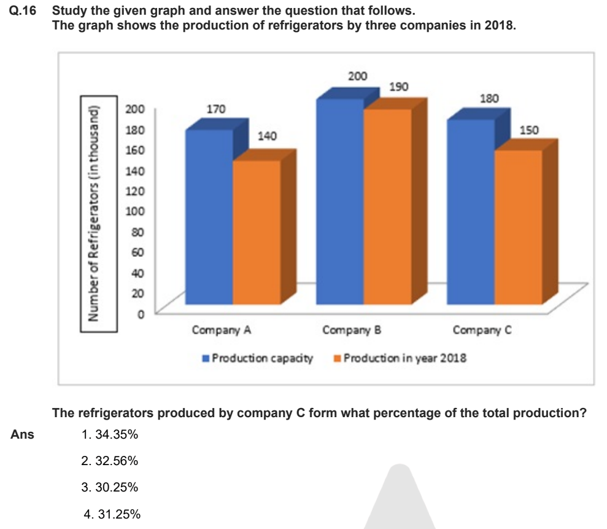 | Study the given graph and answer the question that follows.
The graph shows the production of refrigerators by three companies in 2018.
The refrigerators produced by company C form what percentage of the total production? 1) 34.35% 2) 32.56% 3) 30.25% 4) 31.25% |
| Q67 p.15 Ans: 4 Quantitative Aptitude |
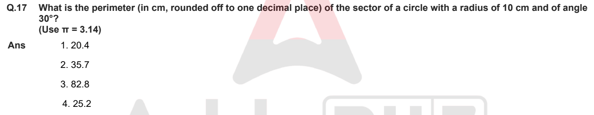 | What is the perimeter (in cm, rounded off to one decimal place) of the sector of a circle with a radius of 10 cm and of angle
30°?
(Use π = 3.14) 1) 20.4 2) 35.7 3) 82.8 4) 25.2 |
| Q68 p.15 Ans: 2 Quantitative Aptitude | If 7845K854 is divisible by 11, then what is the value of K? 1) 6 2) 9 3) 7 4) 8 | |
| Q69 p.15 Ans: 1 Quantitative Aptitude |
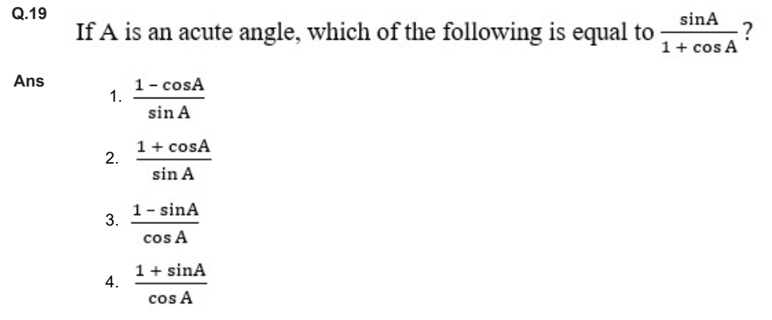 | 1) 2) 3) 4) |
| Q70 p.16 Ans: 4 Quantitative Aptitude |
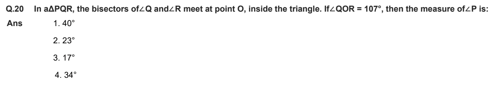 | In aΔPQR, the bisectors of∠Q and∠R meet at point O, inside the triangle. If∠QOR = 107°, then the measure of∠P is: 1) 40° 2) 23° 3) 17° 4) 34° |
| Q71 p.16 Ans: 2 Quantitative Aptitude |
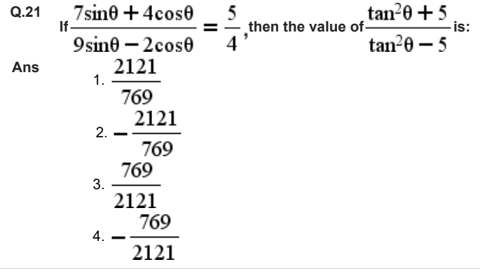 | If then the value of is: 1) 2) 3) 4) |
| Q72 p.16 Ans: 2 Quantitative Aptitude | A number is first increased by 12% and then increased by 23%. The number, so obtained, is now decreased by 34%. What is
the net increase or decrease percent in the original number (nearest to an integer)? 1) 10% increase 2) 9% decrease 3) 10% decrease 4) 9% increase | |
| Q73 p.16 Ans: 2 Quantitative Aptitude |
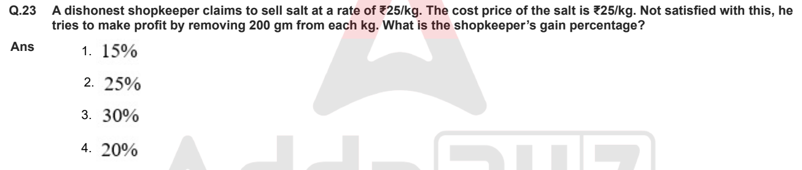 | A dishonest shopkeeper claims to sell salt at a rate of ₹25/kg. The cost price of the salt is ₹25/kg. Not satisfied with this, he
tries to make profit by removing 200 gm from each kg. What is the shopkeeper’s gain percentage? 1) 2) 3) 4) |
| Q74 p.16 Ans: 3 Quantitative Aptitude | A thief noticed a policeman at a distance of 600 metres. The thief started running and the policeman chased him. The thief
and policeman are running at speeds of 12 km/h and 15 km/h, respectively. Find the time (in minutes) required for the
policeman to catch the thief. 1) 8 2) 10 3) 12 4) 15 | |
| Q75 p.17 Ans: 2 Quantitative Aptitude |
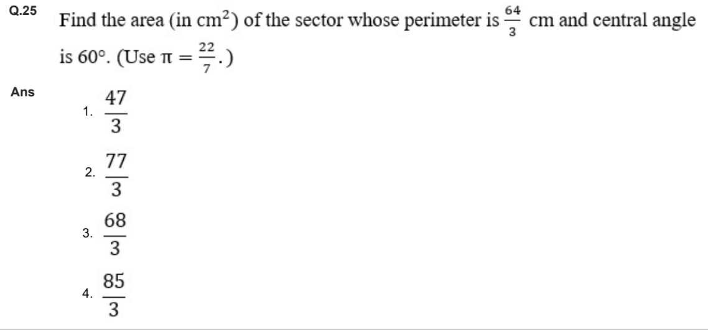 | 1) 2) 3) 4) |
| Q76 p.17 Ans: 4 English Comprehension | Select the option that can be used as a one-word substitute for the given group of words.
Morbid compulsion to consume alcohol continuously 1) Satyromania 2) Maniac 3) Kleptomania 4) Dipsomania | |
| Q77 p.17 Ans: 2 English Comprehension | Select the option that expresses the given sentence in active voice.
The painting was admired by art enthusiasts from around the world. 1) The painting was being admired by art enthusiasts from around the world. 2) Art enthusiasts from around the world admired the painting. 3) Art enthusiasts from around the world have admired the painting. 4) The painting has been admired by art enthusiasts from around the world. | |
| Q78 p.17 Ans: 2 English Comprehension | Select the word segment that can substitute the bracketed word segment correctly and complete the sentence meaningfully.
(Each participant have) performed well. 1) Each participant was 2) Each participant has 3) Each participant have been 4) Each participant were | |
| Q79 p.17 Ans: 1 English Comprehension |
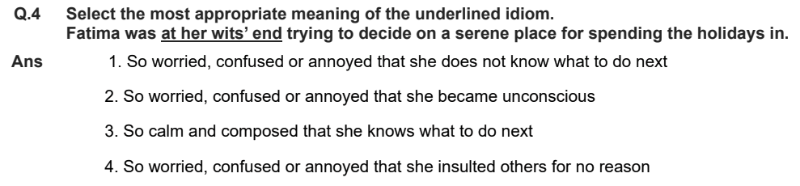 | Select the most appropriate meaning of the underlined idiom.
Fatima was at her wits’ end trying to decide on a serene place for spending the holidays in. 1) So worried, confused or annoyed that she does not know what to do next 2) So worried, confused or annoyed that she became unconscious 3) So calm and composed that she knows what to do next 4) So worried, confused or annoyed that she insulted others for no reason |
| Q80 p.17 Ans: 3 English Comprehension | Parts of a sentence are given below in jumbled order. Arrange the parts in the correct order to form a meaningful sentence.
P. having the opportunity of observing people’s
Q. we respect and appreciate their point of views
R. the advantage of travelling different places and
S. culture, custom and lifestyle, is that 1) RQPS 2) PSQR 3) RPSQ 4) SQPR | |
| Q81 p.18 Ans: 2 English Comprehension | Select the INCORRECTLY spelt word. 1) Accommodate 2) Mischievious 3) Millennium 4) Privilege | |
| Q82 p.18 Ans: 2 English Comprehension | Select the most appropriate synonym of the given word.
Taut 1) Slack 2) Tight 3) Torn 4) Flaccid | |
| Q83 p.18 Ans: 2 English Comprehension | Select the option that expresses the given sentence in active voice.
He will be made President by the people. 1) People will be making him the President. 2) The people will make him President. 3) By the people, he shall be made the President. 4) He will be made President by the people. | |
| Q84 p.18 Ans: 3 English Comprehension | Which of the following idioms means ‘to steal from a shop’? 1) Golden opportunity 2) Green thumb 3) Five-finger discount 4) Black sheep | |
| Q85 p.18 Ans: 4 English Comprehension | Parts of the following sentence have been given as options. Select the option that contains an error.
I are dancing with my husband at my sister’s wedding. 1) husband at my 2) sister’s wedding 3) with my 4) I are dancing | |
| Q86 p.18 Ans: 3 English Comprehension | Parts of the following sentence have been given as options. Select the option that contains an error.
The tea at this café is best than at the Costa Café in our office. 1) at the Costa Café 2) The tea at this café 3) is best than 4) in our office | |
| Q87 p.18 Ans: 4 English Comprehension | Select the most appropriate ANTONYM of the given word.
Miserable 1) Melodious 2) Settled 3) Restrained 4) Cheerful | |
| Q88 p.18 Ans: 3 English Comprehension | Select the most appropriate synonym of the given word.
Confiscate 1) Restock 2) Destroy 3) Seize 4) Titivate | |
| Q89 p.19 Ans: 4 English Comprehension | Select the most appropriate meaning of the given word.
Edible 1) noisome 2) mortal 3) noxious 4) nutritive | |
| Q90 p.19 Ans: 1 English Comprehension |
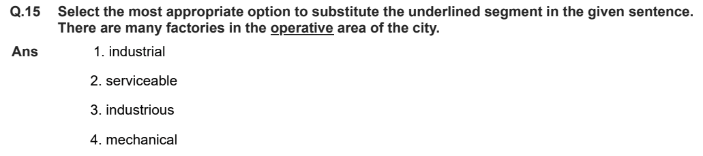 | Select the most appropriate option to substitute the underlined segment in the given sentence.
There are many factories in the operative area of the city. 1) industrial 2) serviceable 3) industrious 4) mechanical |
| Q91 p.19 Ans: 2 English Comprehension | Select the most appropriate synonym of the bracketed word in the following sentence to fill in the blank.
The elaborate syllabi had to be ________(summarised) to make a presentation in the UGC assessment meeting. 1) expanded 2) recapitulated 3) prolonged 4) lengthened | |
| Q92 p.19 Ans: 1 English Comprehension | Identify the INCORRECTLY spelt word in the following sentence and select its correct spelling from the given options.
I receieved a parcel in the mail today. 1) received 2) recived 3) recieved 4) receaved | |
| Q93 p.19 Ans: 2 English Comprehension |
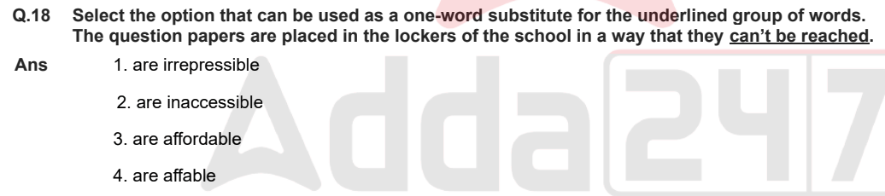 | Select the option that can be used as a one-word substitute for the underlined group of words.
The question papers are placed in the lockers of the school in a way that they can’t be reached. 1) are irrepressible 2) are inaccessible 3) are affordable 4) are affable |
| Q94 p.19 Ans: 1 English Comprehension | Select the most appropriate homophone to fill in the blank.
He has the ________ to express his thoughts. 1) right 2) ride 3) write 4) rite | |
| Q95 p.19 Ans: 2 English Comprehension | Select the option that can be used as a one-word substitute for the given group of words.
An order of law requiring people to remain indoors 1) Restriction 2) Curfew 3) Limit 4) Check in | |
| Q96 p.20 Ans: 1 English Comprehension | Comprehension:
In the following passage, some words have been deleted. Read the passage carefully and select the most appropriate option to fill in
each blank.
Tea prices in the domestic (1)__________ continue to rule high in the current year despite the expectation of a higher production as
compared to the previous year. During the past three months, tea prices have been (2)__________ with the prices of other
companies. Unlike last year, tea prices have generally shown (3) __________, when tea prices rose dramatically, this year, prices
seem to have (4) __________ at a rather high level. In the subsequent four months, the (5)__________ average price showed a
downtrend.
SubQuestion No : 21
Select the most appropriate option to fill in blank number 1. 1) market 2) area 3) zone 4) field | |
| Q97 p.20 Ans: 1 English Comprehension | Comprehension:
In the following passage, some words have been deleted. Read the passage carefully and select the most appropriate option to fill in
each blank.
Tea prices in the domestic (1)__________ continue to rule high in the current year despite the expectation of a higher production as
compared to the previous year. During the past three months, tea prices have been (2)__________ with the prices of other
companies. Unlike last year, tea prices have generally shown (3) __________, when tea prices rose dramatically, this year, prices
seem to have (4) __________ at a rather high level. In the subsequent four months, the (5)__________ average price showed a
downtrend.
SubQuestion No : 22
Select the most appropriate option to fill in blank number 2. 1) aligning 2) favouring 3) countering 4) encountering | |
| Q98 p.20 Ans: 4 English Comprehension | Comprehension:
In the following passage, some words have been deleted. Read the passage carefully and select the most appropriate option to fill in
each blank.
Tea prices in the domestic (1)__________ continue to rule high in the current year despite the expectation of a higher production as
compared to the previous year. During the past three months, tea prices have been (2)__________ with the prices of other
companies. Unlike last year, tea prices have generally shown (3) __________, when tea prices rose dramatically, this year, prices
seem to have (4) __________ at a rather high level. In the subsequent four months, the (5)__________ average price showed a
downtrend.
SubQuestion No : 23
Select the most appropriate option to fill in blank number 3. 1) an inflow 2) an innate 3) a reduction 4) an uptrend | |
| Q99 p.20 Ans: 1 English Comprehension | Comprehension:
In the following passage, some words have been deleted. Read the passage carefully and select the most appropriate option to fill in
each blank.
Tea prices in the domestic (1)__________ continue to rule high in the current year despite the expectation of a higher production as
compared to the previous year. During the past three months, tea prices have been (2)__________ with the prices of other
companies. Unlike last year, tea prices have generally shown (3) __________, when tea prices rose dramatically, this year, prices
seem to have (4) __________ at a rather high level. In the subsequent four months, the (5)__________ average price showed a
downtrend.
SubQuestion No : 24
Select the most appropriate option to fill in blank number 4. 1) stabilised 2) moderated 3) equated 4) abated | |
| Q100 p.21 Ans: 1 English Comprehension |
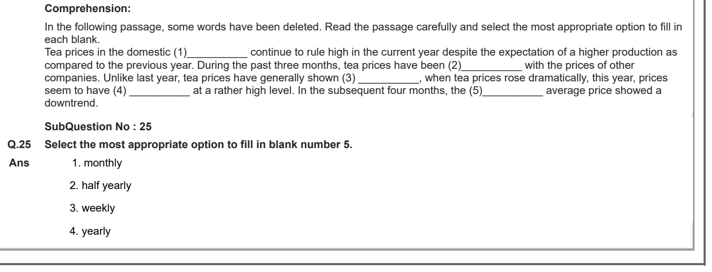 | Comprehension:
In the following passage, some words have been deleted. Read the passage carefully and select the most appropriate option to fill in
each blank.
Tea prices in the domestic (1)__________ continue to rule high in the current year despite the expectation of a higher production as
compared to the previous year. During the past three months, tea prices have been (2)__________ with the prices of other
companies. Unlike last year, tea prices have generally shown (3) __________, when tea prices rose dramatically, this year, prices
seem to have (4) __________ at a rather high level. In the subsequent four months, the (5)__________ average price showed a
downtrend.
SubQuestion No : 25
Select the most appropriate option to fill in blank number 5. 1) monthly 2) half yearly 3) weekly 4) yearly |